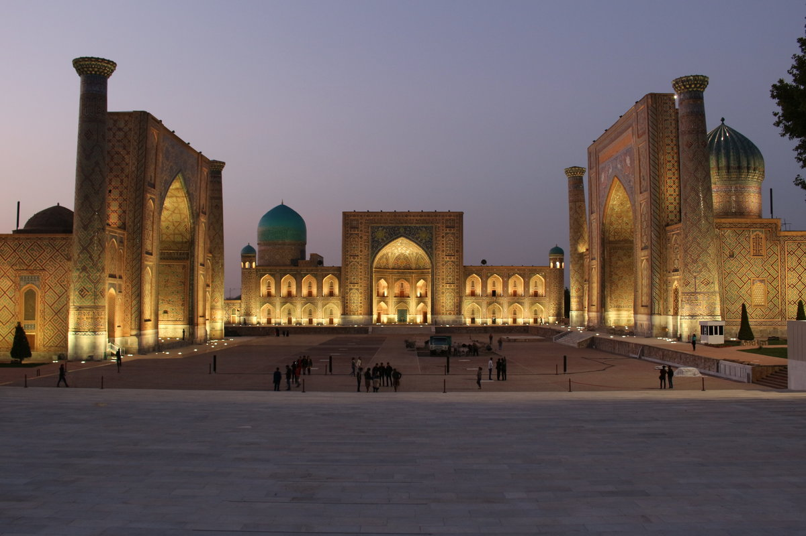

_.Damir._OFF
February 4, 2021
2 Commets
Samarkand mile. the hunt. From the 4th century BC. Until the 6th century, it was the capital of the state of Sogd. From archaeological excavations it is known that even during the Upper Paleolithic period, S. people lived on the territory (see Samarkand Harbor).
alcohol-loving contry
Samarkand has a history of more than 2700 years — one of the oldest cities in the world. Roman historian Quint Kursi Rufning (BC. the hunt. The end of the 1st century BC-BC. The circle of the Samarkand fortress wall was approximately 10.5 km (1st century BC). The mile. the hunt. 329 year the Macedonian troops of Alexander (Alexander Makduni) destroyed Samarkand.